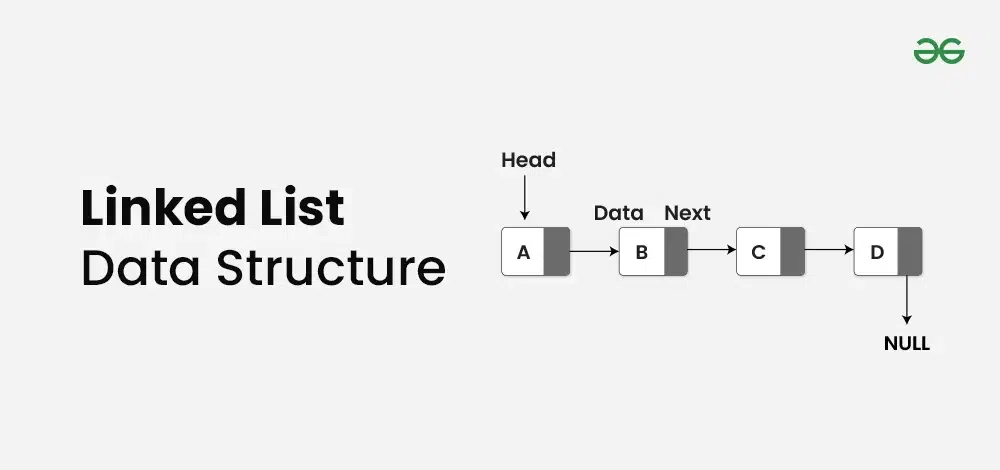

Singly Linked List
Linked List — bu ma'lumotlarni ketma-ket joylashtirish uchun ishlatiladigan dinamik ma'lumotlar tuzilmasi bo‘lib, har bir element (tugun) o‘z qiymati va keyingi tugunning manziliga (pointer) ega. Linked List’ning o‘ziga xosligi shundaki, elementlar xotiraning ketma-ket bo‘lmagan joylarida saqlanishi mumkin, lekin ular pointerlar orqali bog‘langan bo‘ladi.
Illustration
A bir bog‘langan ro‘yxat kompyuter fanlari va dasturlashda asosiy ma’lumotlar tuzilmasi bo‘lib, tugunlardan iborat. Har bir tugun o‘z ichida ma’lumot maydoni va keyingi tugunga bo‘lgan havolani saqlaydi. Oxirgi tugun nullga ishora qiladi, bu esa ro‘yxatning oxiri ekanligini bildiradi. Ushbu chiziqli tuzilma ma’lumotlarni qo‘shish va o‘chirish operatsiyalarini samarali qo‘llab-quvvatlaydi, bu esa uni turli ilovalarda keng qo‘llanilishiga olib keladi. Ushbu qo‘llanmada tugun tuzilmasini ko‘rib chiqamiz, bir bog‘langan ro‘yxat operatsiyalarini (o‘tish, qidirish, uzunlikni aniqlash, qo‘shish va o‘chirish) tushunamiz va ushbu operatsiyalarni samarali amalga oshirish uchun batafsil tushuntirishlar va kod namunalari taqdim etamiz.
Mundarija
Tugun tuzilmasini tushunish
Singly Linked Listda har bir tugun ikkita qismdan iborat: ma'lumot va keyingi tugunga ishora qiluvchi ko'rsatkich. Ma'lumot qismi haqiqiy axborotni saqlaydi, ko'rsatkich qismi esa ketma-ketlikdagi keyingi tugunning manzilini saqlaydi. Ushbu tuzilma tugunlarni dinamik ravishda bir-biriga bog'lashga imkon beradi, zanjir shaklidagi ketma-ketlikni hosil qiladi.

Ushbu tasvirda har bir quti tugunni ifodalaydi, o'q esa keyingi tugunga bog'lanishni ko'rsatadi. Oxirgi tugun NULL ga ishora qiladi, bu ro'yxatning oxirini bildiradi.
Ko'pchilik dasturlash tillarida Singly Linked Listdagi tugun odatda class yoki struct yordamida aniqlanadi.
// Singly Linked Listdagi tugunning ta'rifi
class Node {
constructor(data) {
// Tugunning ma'lumot qismi
this.data = data;
this.next = null;
}
}
Ushbu misolda Node classi integer tipidagi ma'lumot maydonini (data) saqlash va ro'yxatdagi keyingi tugunga havolani o'rnatish uchun ishlatiladigan ko'rsatkichni (next) o'z ichiga oladi.
Singly Linked Listdagi operatsiyalar
- Traversal
- Qidirish
- Uzunlik
- Qo'shish:
- Boshida qo'shish
- Oxirida qo'shish
- Ma'lum bir pozitsiyada qo'shish
- O'chirish:
- Boshidan o'chirish
- Oxiridan o'chirish
- Ma'lum bir tugunni o'chirish
Yuqoridagi har bir operatsiyani bosqichma-bosqich ko'rib chiqamiz.
Singly Linked Listda Traversal (O'tish)
Traversal (o'tish) har bir tugunni ziyorat qilish va uning ma'lumotlari bilan ba'zi operatsiyalarni bajarishni o'z ichiga oladi. Oddiy traversal funktsiyasi har bir tugunning ma'lumotlarini chop etish yoki ishlov berish bo'lishi mumkin.
Bosqichma-bosqich yondoshuv:
- Listning boshidan boshlash uchun current ko'rsatkichini ishga tushiring.
- While sikli yordamida listni current ko'rsatkich NULL ga yetguncha aylantiring.
- Sikl ichida, current tugunning ma'lumotlarini chop eting va current ko'rsatkichini keyingi tugunga o'tkazing.
Quyida singly Linked Listda traversal qilish uchun funksiyaning misoli keltirilgan:
// Javascript funktsiyasi - linked listni o'tish va elementlarni chop etish
function traverseLinkedList(head) {
// Linked listning boshidan boshlang
let current = head;
// Linked listni oxirigacha (null) o'ting
while (current !== null) {
// Joriy tugunning ma'lumotlarini chop eting
console.log(current.data + " ");
// Keyingi tugunga o'ting
current = current.next;
}
console.log();
}Natija
1 2 3
Singly Linked Listda Qidiruv
Singly Linked Listda qidiruv, listdagi ma'lum bir element yoki qiymatni izlash jarayonini anglatadi.
Bosqichma-bosqich yondoshuv:
- Linked Listni boshidan boshlang.
- Joriy tugunning ma'lumotlari maqsadli qiymatga mos kelishini tekshiring.
- Agar moslik topilsa, true qaytaring.
- Aks holda, keyingi tugunga o'ting va 2-bosqichni takrorlang.
- Agar list oxiriga yetib borib ham moslik topilmasa, false qaytaring.
Quyida singly linked listda qidiruv uchun funktsiyaning misoli keltirilgan:
// Javascript funktsiyasi - Linked Listda qiymatni qidirish
function searchLinkedList(head, target) {
// Linked Listni o'ting
while (head !== null) {
// Joriy tugunning ma'lumotlari maqsadli qiymatga mos kelishini tekshiring
if (head.data === target) {
return true; // Qiymat topildi
}
// Keyingi tugunga o'ting
head = head.next;
}
return false; // Qiymat topilmadi
}Singly Linked Listda Uzunlikni Topish
Singly Linked Listda uzunlikni topish — bu bog'langan ro'yxatdagi tugunlar sonini aniqlash jarayonini anglatadi.
Qadamlar bo'yicha yondashuv:
- Hisoblagichni length ni 0 ga tenglang.
- Listning boshidan boshlang, uni current ga tayinlang.
- Listni o'ting:
- Har bir tugun uchun lengthni oshiring.
- Keyingi tugunga o'ting (current = current->next).
- Oxirgi length qiymatini qaytaring.
Quyida Singly Linked Listda uzunlikni topish uchun funktsiya keltirilgan:
// Javascript funktsiyasi Linked Listning uzunligini topish uchun
function findLength(head) {
// Hisoblagichni boshlang'ich qiymatga o'rnating
let length = 0;
// Listning boshidan boshlang
let current = head;
// Listni o'ting
while (current !== null) {
// Har bir tugun uchun uzunlikni oshiring
length++;
// Keyingi tugunga o'ting
current = current.next;
}
// Linked Listning oxirgi uzunligini qaytaring
return length;
}Singly Linked Listda Kiritish
Kiritish - bu linked listlarda asosiy operatsiya bo'lib, yangi tugun qo'shishni anglatadi. Kiritishning bir nechta holatlari mavjud:
a. Singly Linked Listning Boshiiga Tugun Qo'shish:

Bosqichma-bosqich yondoshuv:
- Berilgan qiymat bilan yangi tugun yarating.
- Yangi tugunning next ko'rsatkichini joriy headga o'rnating.
- Headni yangi tugunga yo'naltiring.
- Linked listning yangi headini qaytaring.
Quyida singly linked listning boshiga tugun qo'shish uchun funktsiyaning misoli keltirilgan:
// Javascript funktsiyasi - linked listning boshiga yangi tugun qo'shish
function insertAtBeginning(head, value) {
// Berilgan qiymat bilan yangi tugun yarating
let newNode = new Node(value);
// Yangi tugunning next ko'rsatkichini joriy headga o'rnating
newNode.next = head;
// Headni yangi tugunga yo'naltiring
head = newNode;
// Linked listning yangi headini qaytaring
return head;
}b. Singly Linked Listning Oxiriga Tugun Qo'shish:
Listning oxiriga tugun qo'shish uchun, listni oxirgi tugunga yetguncha o'qing va yangi tugunni joriy oxirgi tugunga ulang.

Bosqichma-bosqich yondoshuv:
- Berilgan qiymat bilan yangi tugun yarating.
- List bo'sh ekanligini tekshiring:
- Agar bo'sh bo'lsa, yangi tugunni head qilib o'rnating va qaytaring.
- Listni oxirgi tugunga yetguncha o'qing.
- Yangi tugunni joriy oxirgi tugunga ulanadi, oxirgi tugunning next ko'rsatkichini yangi tugunga o'rnatib.
Quyida singly linked listning oxiriga tugun qo'shish uchun funktsiyaning misoli keltirilgan:
// Javascript funktsiyasi - linked listning boshiga yangi tugun qo'shish
function insertAtBeginning(head, value) {
// Berilgan qiymat bilan yangi tugun yarating
let newNode = new Node(value);
// Yangi tugunning next ko'rsatkichini joriy headga o'rnating
newNode.next = head;
// Headni yangi tugunga yo'naltiring
head = newNode;
// Linked listning yangi headini qaytaring
return head;
}c. Singly Linked Listning Ma'lum Bir Pozitsiyasiga Tugun Qo'shish:
Ma'lum bir pozitsiyaga tugun qo'shish uchun, listni kerakli pozitsiyaga yetguncha o'qing, yangi tugunni keyingi tugunga ulang va bog'lanishlarni mos ravishda yangilang.

Asosan, yangi tugunni qo'shishimiz kerak bo'lgan tugunni topamiz. Agar shu tugunga yetmasdan NULLga duch kelsak, bu berilgan pozitsiyaning yaroqsizligini anglatadi.
Quyida singly linked listning ma'lum bir pozitsiyasiga tugun qo'shish uchun funktsiyaning misoli keltirilgan:
// Ma'lum bir pozitsiyaga tugun qo'shish funktsiyasi
function insertPos(head, pos, data) {
if (pos < 1) {
console.log("Yaroqsiz pozitsiya!");
return head;
}
// Boshiga qo'shish uchun maxsus holat
if (pos === 1) {
const newNode = new Node(data);
newNode.next = head;
return newNode;
}
// Listni o'qib, qo'shish nuqtasidan oldingi tugunni toping
let prev = head;
let count = 1;
while (count < pos - 1 && prev !== null) {
prev = prev.next;
count++;
}
// Agar pozitsiya tugunlardan ko'p bo'lsa
if (prev === null) {
console.log("Yaroqsiz pozitsiya!");
return head;
}
// Yangi tugunni berilgan pozitsiyada qo'shing
const newNode = new Node(data);
newNode.next = prev.next;
prev.next = newNode;
return head;
}Singly Linked Listda Tugun O'chirish
Tugunni linked listdan o'chirish operatsiyasini o'z ichiga oladi. Qo'shish kabi, o'chirishning turli holatlari mavjud:
a. Boshida Tugun O'chirish:
Birinchi tugunni o'chirish uchun, boshni listdagi ikkinchi tugunga bog'lang.

Qadam-baqadam yondashuv:
- Boshning NULL ekanligini tekshiring.
- Agar NULL bo'lsa, NULLni qaytaring (list bo'sh).
- Hozirgi bosh tugunni vaqtinchalik o'zgaruvchiga temp saqlang.
- Bosh ko'rsatkichi keyingi tugunga o'ting.
- Vaqtinchalik tugunni o'chiring.
- Linked listning yangi boshini qaytaring.
Quyida singly linked listning boshida tugun o'chirish funktsiyasi keltirilgan:
// Javascript Function to remove the first node
// of the linked list /
function removeFirstNode(head) {
if (head == null) return null;
// Move the head pointer to the next node
temp = head;
head = head.next;
return head;
}b. Singly Linked Listning Oxiridagi Tugunni O'chirish:
Oxirgi tugunni o'chirish uchun, listni ikkinchi oxirgi tugunga qadar yurib, uning keyingi maydonini None ga yangilang.

Qadam-baqadam yondashuv:
- Boshning NULL ekanligini tekshiring.
- Agar NULL bo'lsa, NULLni qaytaring (list bo'sh).
- Boshning keyingi NULL ekanligini tekshiring (listda faqat bitta tugun bor).
- Agar to'g'ri bo'lsa, boshni o'chirib, NULLni qaytaring.
- Listni ikkinchi oxirgi tugunni (second_last) topish uchun yuring.
- Oxirgi tugunni (second_lastdan keyingi tugunni) o'chiring.
- Ikkinchi oxirgi tugunning keyingi ko'rsatkichi NULLga o'rnatilsin.
- Linked listning boshini qaytaring.
Quyida singly linked listning oxirida tugun o'chirish funktsiyasi keltirilgan:
// Javascript Function to remove the last node of the linked list
function removeLastNode(head) {
// If the list is empty, return null
if (head === null)
return null;
// If the list has only one node, delete it
// and return null
if (head.next === null) {
head = null;
return null;
}
// Find the second last node
let second_last = head;
while (second_last.next.next !== null)
second_last = second_last.next;
// Remove the last node
second_last.next = null;
// Return the modified list
return head;
}c. Singly Linked Listning Muayyan Pozitsiyasida Tugunni O'chirish:
Muayyan pozitsiyadagi tugunni o'chirish uchun, listni kerakli pozitsiyaga qadar yurib, o'chiriladigan tugunni o'tkazib yuborish uchun bog'lanishlarni yangilang.

Qadam-baqadam yondashuv:
- List bo'sh yoki pozitsiya noto'g'ri bo'lsa, qaytaring.
- Agar bosh o'chirilishi kerak bo'lsa, boshni yangilang va tugunni o'chiring.
- O'chirilishi kerak bo'lgan pozitsiyaning oldingi tuguniga o'ting.
- Agar pozitsiya chegaradan tashqarida bo'lsa, qaytaring.
- O'chirilishi kerak bo'lgan tugunni saqlang.
- Bog'lanishlarni o'zgartirib, tugunni o'tkazib yuboring.
- Saqlangan tugunni o'chiring.
Quyida singly linked listning muayyan pozitsiyasidagi tugunni o'chirish funktsiyasi keltirilgan:
// Muayyan pozitsiyadagi tugunni o'chirish uchun Javascript funktsiyasi
function deleteAtPosition(head, position) {
// Agar list bo'sh bo'lsa yoki pozitsiya noto'g'ri bo'lsa
if (head === null || position < 1) {
return head;
}
// Agar bosh o'chirilishi kerak bo'lsa
if (position === 1) {
let temp = head;
head = head.next;
temp = null;
return head;
}
// O'chirilishi kerak bo'lgan pozitsiyadan oldingi tugunga o'ting
let current = head;
for (let i = 1; i < position - 1 && current !== null; i++) {
current = current.next;
}
// Agar pozitsiya chegaradan tashqarida bo'lsa
if (current === null || current.next === null) {
return head;
}
// O'chirilishi kerak bo'lgan tugunni saqlang
let temp = current.next;
// Tugunni o'tkazib yuborish uchun bog'lanishlarni yangilang
current.next = current.next.next;
// Tugunni o'chiring
temp = null;
return head;
}Video Explanation
Code Example
// Node tuzish
class Node {
constructor(value) {
this.value = value;
this.next = null;
}
}
// Linked List tuzish
class LinkedList {
constructor() {
this.head = null;
}
// Element qo'shish
append(value) {
let newNode = new Node(value);
if (!this.head) {
this.head = newNode;
} else {
let current = this.head;
while (current.next) {
current = current.next;
}
current.next = newNode;
}
}
// Linked Listdagi elementlarni chiqarish
printList() {
let current = this.head;
while (current) {
console.log(current.value);
current = current.next;
}
}
}